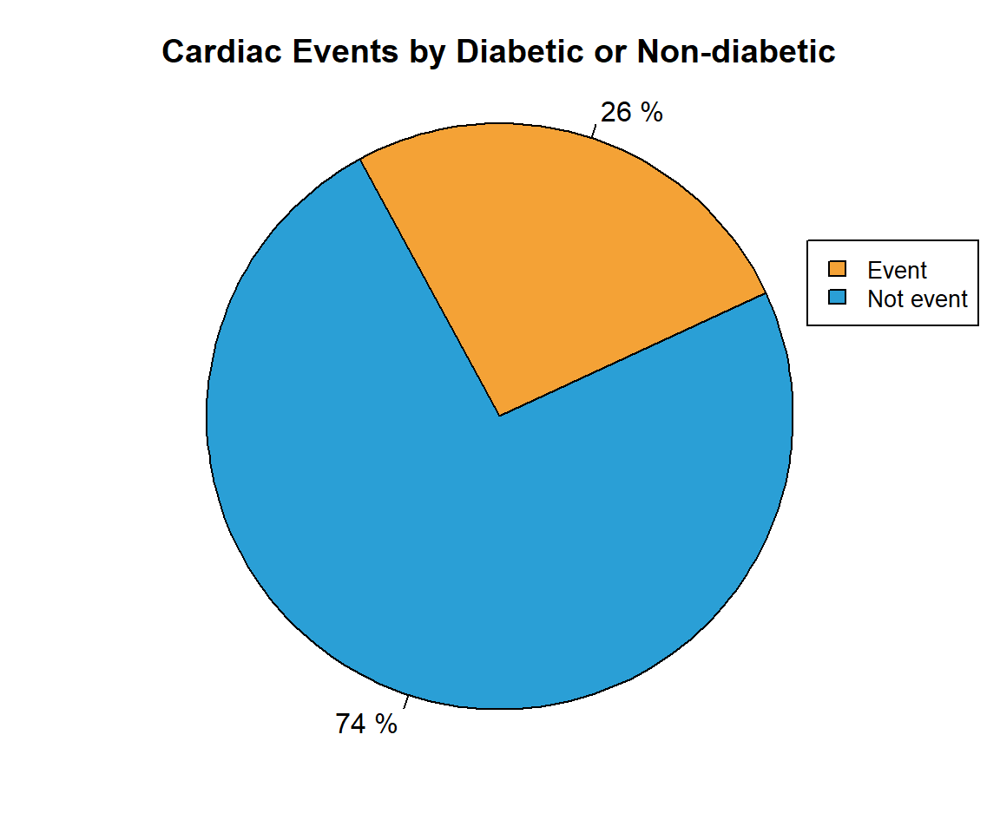
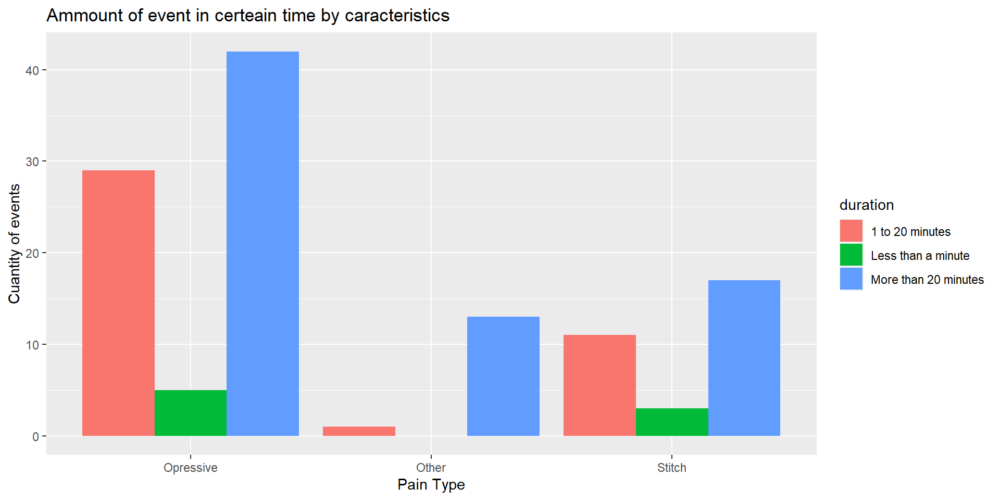

Informe Eventos Cardiacos
Introduccion
Para poder trabajar de una manera optima con el dataset que se nos fue propocionado, procedimos a buscar informacion y recopilar investigaciones de medicos con experiencia cardiologia. Con una base lista comenzamos a analizar los datos y buscar posibles combinaciones que aporten informacion nueva a lo aportado
Data analysis
In this section we decided to find out how the different metadata affect the cardiac event
Gender
This data seemed very important to us since according to the National institutes of Health, especially an investigation by the doctor Neth Heart J, indicates that these events would occur more in men than in women
Gender graphic (with and without events)

In this graph we can highlight that we have a high density of male patient than female
Events by gender

Edad de quienes tuvieron algun evento cardiaco
Acerca de la edad de los pacientes que tuvieron algun evento cardiaco, sin tomar en cuenta sus demas problemas de salud, concluimos con que la mayoria de

With this graphic we can see that the density of the age that had an event are people between 35 and 81 years old
| Etapa | Porcentaje |
|---|---|
| Adulto Joven | 0 |
| Adulto | 51 |
| Adulto Maduro | 49 |
Sintomas Asociados

Diabetics
Gender graphic (with and without events)
In this graph we can highlight that we have a high density of male patient than female
Gender graphic (with and without events)

In this graph we can highlight that we have a high density of male patient than female
Family history
Gender graphic (with and without events)

In this graph we can highlight that we have a high density of male patient than female
Interpretacion
Para esta parte nos encargamos de buscar relaciones interesantes entre los datos que analizamos anteriormente
Intersetion between patient with events

Eventos by age and gender
| Sex | AgeMean |
|---|---|
| Male | 62 |
| Female | 65 |
Cantidad de eventos por duracion
Evento por duracion y ubicacion

In the next graph we evaluate the different types pain suffered before the event. For each type of pain we see the ammount of events for different durations of said pain. From this graph we conclude that most of the events are often produced after an opressive type of pain. We can also see that duration of the pain is almost independent of the type, because all types share the same distribution of people with events by its time. Less than a minute is where less people suffers an event, while most people who suffers an event suffers it in more than 20 minutes.
Eventos por duracion
Dolor opresivo

Personas que tuvieron mas de un evento
This graph shows the percentage of people that suffered from more than one event in relation to various factors. In order to maintain accuracy the people we took into account can only suffer from up to 2 of each factor, therefore reducing the amount of intersections between factors. (This doesn’t apply to the first bar which takes all factors into account).
Graficos
Tabla
| Category | Male | Female |
|---|---|---|
| % of people with one event | 41.23711 | 45.83333 |
| % of people with more than one event | 58.76289 | 54.16667 |